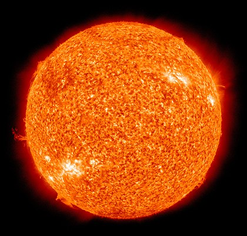

Солнце

Солнце — одна из звёзд нашей Галактики (Млечный Путь) и единственная звезда Солнечной системы. Вокруг Солнца обращаются другие объекты этой системы: планеты и их спутники, карликовые планеты и их спутники, астероиды, метеороиды, кометы и космическая пыль. По спектральной классификации Солнце относится к типу G2V (жёлтый карлик). Средняя плотность Солнца составляет 1,4 г/см³ (в 1,4 раза больше, чем у воды). Эффективная температура поверхности Солнца — 5780 кельвин. Поэтому Солнце светит почти белым светом, но прямой свет Солнца у поверхности нашей планеты приобретает некоторый жёлтый оттенок из-за более сильного рассеяния и поглощения коротковолновой части спектра атмосферой Земли (при ясном небе, вместе с голубым рассеянным светом от неба, солнечный свет вновь даёт белое освещение). Солнечное излучение поддерживает жизнь на Земле (свет необходим для начальных стадий фотосинтеза), определяет климат.